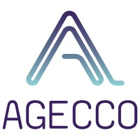
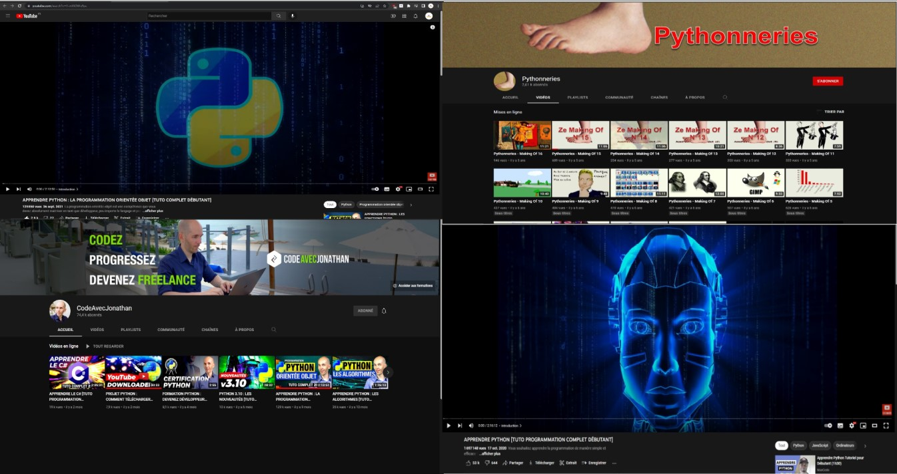
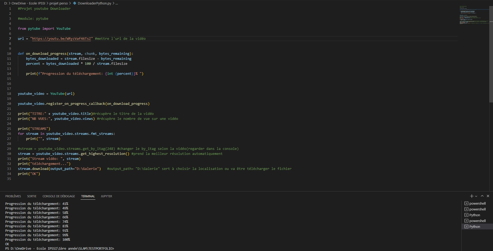
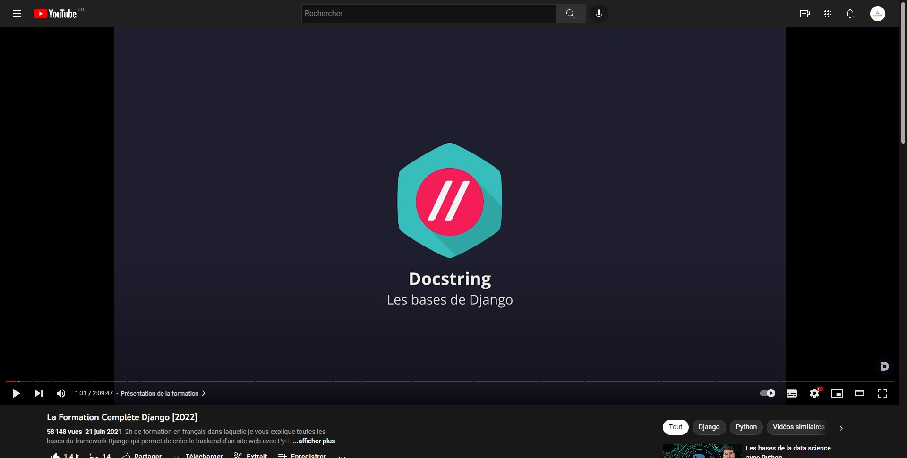
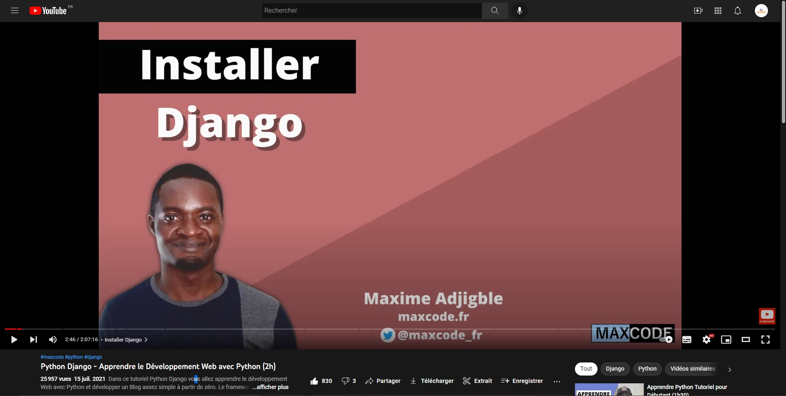
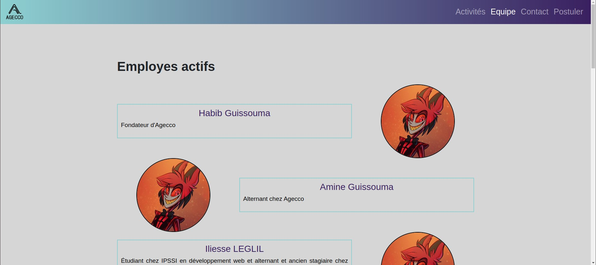
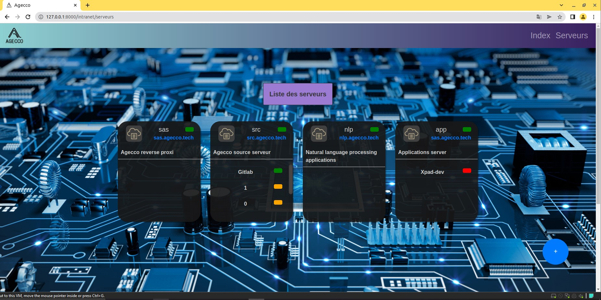

Agecco est une petite entreprise de développement web fondée en 2018 par son dirigeant actuel M. Habib GUISSOUMA.
Le but bute principal étant de laisser mûrir un projet jusqu’à avoir un produit fini.
Le premier de ses projets est toujours en cours actuellement. Il s’agit de développer une application web.
Cette application a pour but de permettre à n’importe qui d’écrire des livres. Pour les utilisateurs particuliers,
cette application permet non seulement d’écrire des livres mais aussi de les partager, d’en faire des critiques, de les traduire et bien plus encore.
J’ai pu assister à un stage de 7 semaines dans cette entreprise ou j’ai pu faire différente chose sur un de leur projet.


Au début de mon stage j’ai regardé des vidéos de formations sur python et python orientée objet comme :
sur la chaine du formateur CodeAvecJonathan
et plusieurs vidéos de la chaines pythonneries
- https://www.youtube.com/user/Pythonneries/videos
qui fait des cours python.
Suite à ça j’ai pu faire un downloader de vidéo YouTube qui récupère le titre, le nombre de vue et enregistre la vidéo.



Suite à toutes ces formations et exercices j’ai pu apporter des modifications à un des projets de l’entreprise qui est leur site internet.
J’ai modifié des pages déjà existantes comme la page où l’ont peu voir les employés de l’entreprise et s’ils sont actif ou non, dans cette page j’ai dû modifier le code de sorte à ce qu’il soit plus simple.
Django possède un menu admin de base on peut interagir avec la base de données de manière graphique très simplement sans avoir de connaissance en développement, donc on pourra ensuite ajouter des utilisateurs sans passer par les fixtures mais directement par le menu admin.
Grâce à Django j’ai pu utiliser des boucles for python dans le code html qui répète un morceau de code pour des objets spécifiques qui dans ce cas se trouvait dans des fixtures. A chacun de ces objets le code se répète et donc cela évite les erreurs d’inattention ou les oublies en plus apporte un gain de temps.


Puis j’ai créé une nouvelle page qui affiche les serveurs de l’entreprise.
Dans cette page il faut pouvoir voir les différents serveurs, leurs états, les applications qui sont sur ces serveurs et leurs états.
Il faut aussi pouvoir créer de nouveaux serveurs et en supprimer sans passer par le menu admin.
J’ai donc fais un petit formulaire simple à 3 champs qui demandais le nom, la description et le host souhaiter pour le serveur.